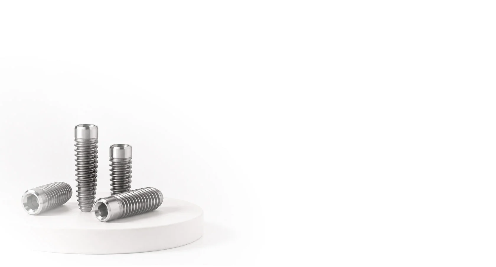
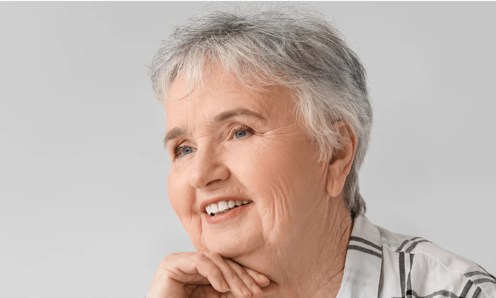
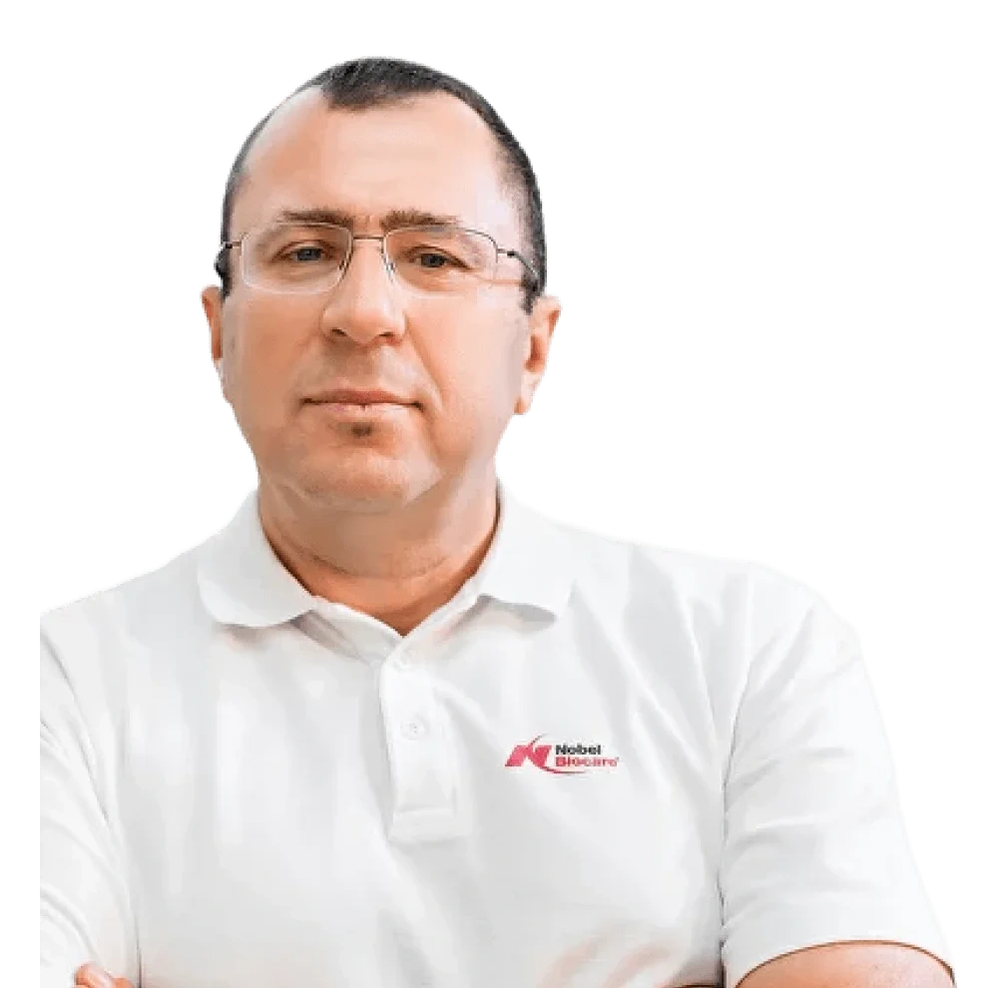
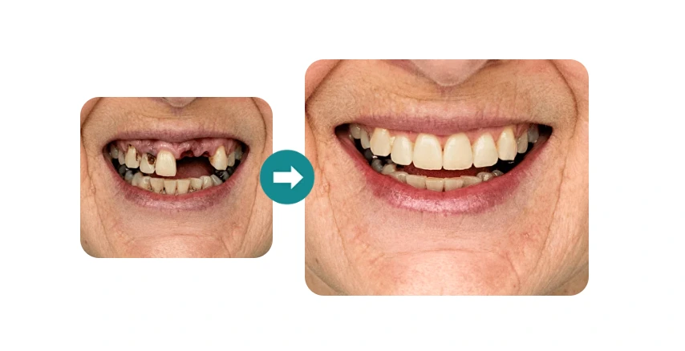
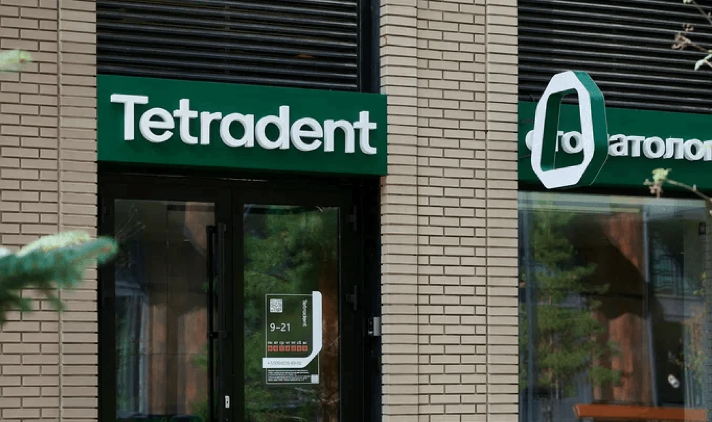

От 3 до 6 имплантов
Количество имплантов определяется индивидуально с учётом клинической ситуации.
Альтернатива All-on-4
За 1 день, без костной пластики,
с сохранением здоровых зубов.
TiS позволяет восстановить полный зубной ряд, сохранив здоровые зубы и отказавшись от лишних хирургических вмешательств.
| Параметр | All-on-4 | TiS |
|---|---|---|
| Здоровые зубы | Удаление зубного ряда | Удаляются только зубы, которые невозможно сохранить |
| Количество имплантов | 4 импланта | От 3 до 6 имплантов |
| Зубной ряд | 8-10 зубов | Полный зубной ряд, до 14 зубов |
| Костная пластика | Может потребоваться | Не требуется |
| Стоимость | Возможны дополнительные этапы | Фиксируется в договоре |
TiS - авторская система восстановления полного зубного ряда с опорой от 3 до 6 имплантов.

Количество имплантов определяется индивидуально с учётом клинической ситуации.
Особый угол установки помогает задействовать больший объём костной ткани.
Протокол позволяет проводить лечение без наращивания костной ткани.
Удаляются только зубы, которые действительно невозможно сохранить.
Уже установленные импланты могут быть включены в систему TiS.
Протез изготавливается в собственной зуботехнической лаборатории клиники.
По протоколу TiS можно восстановить до 14 зубов на одной челюсти. Полный зубной ряд помогает правильно распределить нагрузку и сохранить объём лица.


Автор технологии TiS
Главный врач, хирург-имплантолог
Александр Леонидович разработал и запатентовал протокол восстановления полного зубного ряда TiS. На консультации врач изучит снимок, оценит состояние зубов, костной ткани и дёсен и предложит подходящий вариант лечения.
Возможность лечения определяется врачом после осмотра и диагностики.
Окончательное решение о возможности имплантации принимает врач после консультации и 3D-КТ.
Врач оценивает состояние зубов, костной ткани и дёсен.
Проводится 3D-планирование с точностью до 0,01 мм.
Создаётся полный зубной ряд с учётом прикуса и пропорций лица.
Импланты устанавливаются в заранее рассчитанные позиции.
Протез изготавливается в лаборатории клиники и устанавливается в день операции.

1 этап
126 000 ₽
2 этап
165 000 ₽
Итого: 291 000 ₽за готовую челюсть
Предоставляется производителем имплантов.
Клиника выдаёт официальный гарантийный документ.
Гарантия распространяется на установленную конструкцию.
Клиника сопровождает пациента после завершения лечения.
Запишитесь на консультацию к автору технологии TiS. Врач проведёт осмотр, изучит 3D-КТ, составит план лечения и назовёт точную стоимость для вашего клинического случая.
АдресМосква, ул. Архитектора Щусева, д. 2, к. 3
Режим работыЕжедневно с 9:00 до 21:00
Телефон+7 (495) 021-13-95

Консультация в Tetradent
Оставьте номер телефона. Администратор клиники свяжется с вами, ответит на вопросы и предложит удобное время.